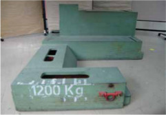
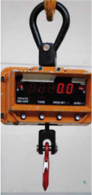
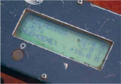
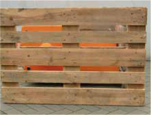
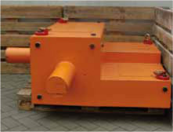
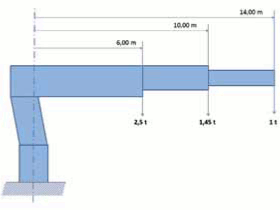

Wie schwer ist die Last, die gehoben werden soll? Zur Beantwortung dieser Frage gibt es verschiedene Möglichkeiten: Wissen, Wiegen, Rechnen!
Am besten ist es, wenn die Last mit dem Gewicht gekennzeichnet ist (Bild 5-1).

Bild 5-1: Der Idealfall:
Gewichtsangabe auf der Last
Für versandfertige Ware sowie an technischen Arbeitsmitteln der Werften, die schwerer sind als eine Tonne, ist die Kennzeichnung vorgeschrieben.
Diese sinnvolle Regelung sollte auch bei Ihnen gelten.
Die Hersteller von Maschinen und Anlageteilen sind inzwischen verstärkt bemüht, die Lasten mit einer Gewichtsangabe zu versehen. In den Transportpapieren oder den Begleitpapieren sind ebenfalls Gewichtsangaben zu finden.
Zum Wiegen werden Hilfsmittel eingesetzt, wie Kranwaagen (Bilder 5-2 und 5-3) oder Hebezeuge mit Wägeeinrichtungen, die das Gewicht der Last anzeigen.

Bild 5-2: Batteriegetriebene digitale Kranwaagen sind leicht transportabel und gut ablesbar

Bild 5-3: Steuerbirne mit digitaler Lastanzeige
Wenn diese Möglichkeiten nicht vorhanden sind, lässt es sich nicht umgehen, die Last zu berechnen oder aber von den Vorgesetzten oder Mitarbeitern der Arbeitsvorbereitung berechnen zu lassen.
Ähnlich sieht es mit der Feststellung des Schwerpunktes aus. Bei vielen Bauteilen ist die Schwerpunktlage offensichtlich, wenn sie gleichmäßig geformt sind.
Anders verhält es sich jedoch bei Teilen, wie Drehbänken, Schneckenpressen oder ähnlich geformten Maschinen (Bilder 5-4 und 5-5).

Bild 5-4: Dieser unscheinbaren Kiste...

Bild 5-5: ...sieht man die einseitige Belastung nicht an!
Die beste Möglichkeit ist, am Bauteil selbst oder aber an der Verpackung die Schwerpunktlage zu kennzeichnen.
Nur wenn die Schwerpunktlage richtig ermittelt worden ist, kann man den Kranhaken in die richtige Position bringen. Die Tragfähigkeit von Auslegerkranen ist von der Auslegerstellung abhängig.
Auch der Anschläger muss wissen, dass die Tragfähigkeit mit dem Abstand der Last vom Kran abnimmt (Bild 5-6).
Der Lastmomentbegrenzer darf nicht als Ersatz für mangelhafte Gewichtsbestimmung missbraucht werden.

Bild 5-6: Die geringste Tragfähigkeit ergibt sich bei der längsten Auslegerstellung